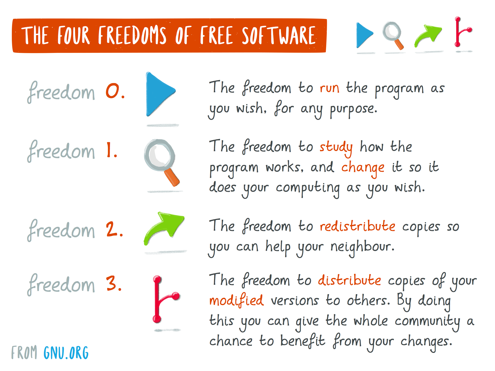

.timeline
Welcome to FR33 PL4Y, retro arcade games written using modern code!
✓ Inspired by 70s and 80s arcade games in MAME.
✓ Powered by Microsoft .NET SDK and MonoGame.
✓ Free Software under GPL-3.0 License (hover image to enlarge).

Installation:
Create and Run a New MonoGame Project:
Operating System specific information: